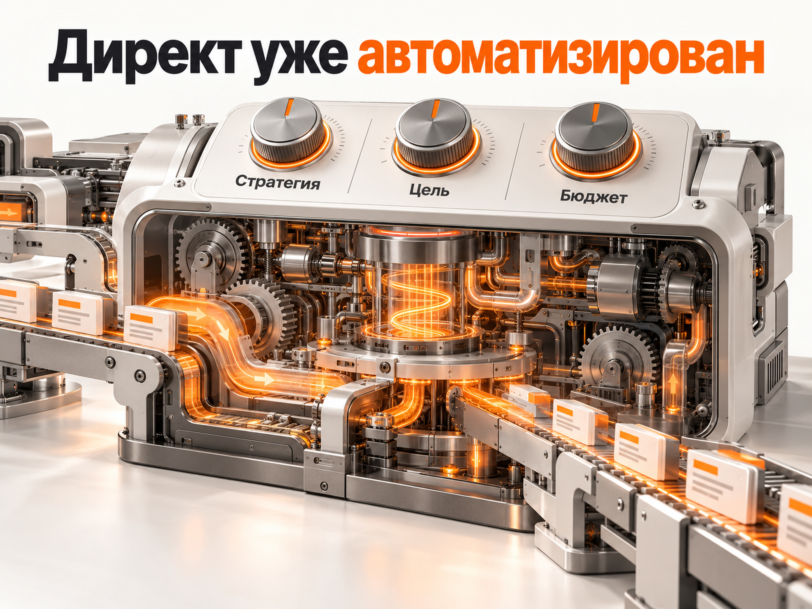
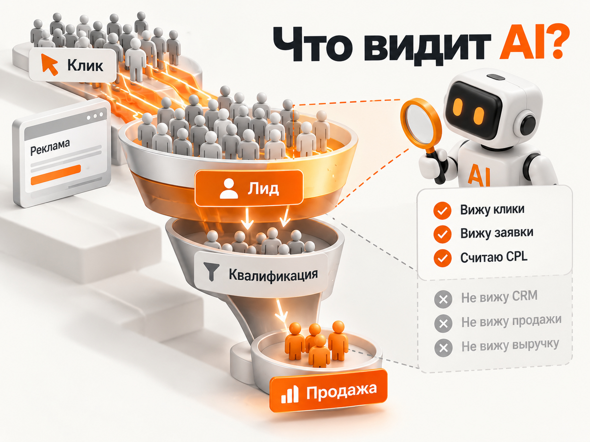
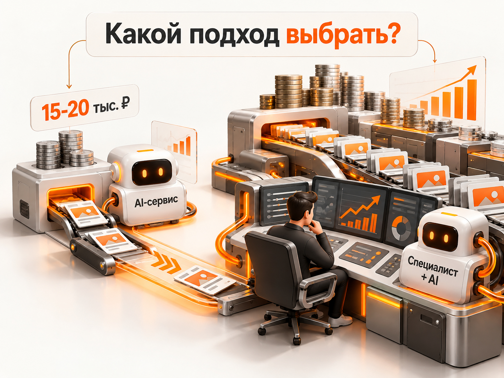

Блог о платном трафике
AI-директолог: может ли ИИ полностью вести Яндекс Директ
AI-директолог или ИИ-директолог - новое название для сервисов, которые обещают автоматизировать настройку и ведение рекламы в Яндекс Директе. Некоторые помогают с аналитикой, объявлениями и минус-словами, другие уже рекламируются почти как полноценная замена специалисту: подключаете аккаунт, искусственный интеллект работает 24/7, оптимизирует кампании и снижает стоимость заявки.
На первый взгляд идея логичная. Сам Яндекс активно автоматизирует Директ, автоматические стратегии давно управляют ставками, а современные модели способны анализировать таблицы, писать объявления и работать через API.
Но между «автоматизировать часть работы» и «самостоятельно вести Яндекс Директ» большая разница.
Я изучил актуальные сервисы, опубликованные кейсы, отзывы пользователей и практические тесты ИИ-инструментов. На сентябрь 2026 года AI действительно способен выполнять значительную часть рутинной работы директолога. А вот убедительных независимых доказательств того, что его можно без постоянного контроля поставить вместо хорошего специалиста и стабильно получать сопоставимый бизнес-результат, пока нет.
Что вообще называют AI-директологом
Единого продукта или технологии «AI-директолог» не существует.
Под этим названием продаются очень разные решения.
Одни сервисы в основном анализируют поисковые запросы и предлагают минус-слова. Другие подключаются к рекламному кабинету через API, ищут аномалии, анализируют статистику, предлагают изменения ставок, бюджетов и структуры кампаний. Есть и решения, которые позиционируются практически как автономный директолог.
Поэтому надпись «AI-директолог» сама по себе мало что говорит о продукте. Важно смотреть, какие конкретно задачи система выполняет и какие решения ей разрешено принимать самостоятельно.
Яндекс Директ уже давно автоматизирован
Есть ещё один важный момент, который теряется в рекламе AI-директологов.
Сам Яндекс Директ уже является очень сильно автоматизированной системой.
В современной рекламе специалист не сидит весь день и вручную меняет ставки по каждому ключевому слову, как это происходило много лет назад. Значительную часть этой работы выполняют алгоритмы самого Яндекса.
Автоматические стратегии распределяют бюджет, определяют участие в аукционе, ищут пользователей с большей вероятностью конверсии и постоянно переоценивают огромное количество сигналов.
То есть AI-директолог часто автоматизирует систему, которая уже сама по себе автоматизирована.

Поэтому ценность хорошего специалиста сегодня заключается не столько в механическом управлении рекламным кабинетом, сколько в решениях более высокого уровня:
- какую стратегию выбрать;
- на какую цель её обучать;
- когда дать алгоритму ещё время;
- когда вмешаться;
- когда поменять стратегию;
- когда перераспределить бюджет;
- какую кампанию масштабировать;
- какую гипотезу остановить;
- почему результат изменился;
- проблема находится в рекламе или уже за её пределами.
Именно здесь начинается та часть работы, которую сложно формализовать.
Иногда решение принимается на основании статистики. Иногда данных недостаточно, ситуация изменилась слишком быстро или выборка слишком маленькая.
Тогда хороший специалист опирается на накопленный опыт и профессиональное ощущение ситуации. Это можно назвать «чуйкой», но на практике она обычно складывается из десятков похожих ситуаций, которые специалист видел раньше.
Он замечает сочетание небольших сигналов и понимает: эту кампанию лучше пока не трогать, хотя показатели ухудшились. Или наоборот - формально всё ещё выглядит нормально, но стратегию пора менять.
Формулы, которая всегда однозначно определяет правильный момент для такого решения, не существует.
Даже Яндекс пока не заменяет специалиста собственным AI
Хороший ориентир даёт сам Яндекс.
В Директе уже работает собственный ИИ-помощник на базе технологий Яндекса. Он способен анализировать статистику, строить отчёты, отвечать на вопросы по рекламному аккаунту и помогать при создании кампаний.
По данным Яндекса, в A/B-тестировании «Простого старта» весной 2026 года кампании, созданные с использованием ИИ-помощника, получили больше конверсий.
Это хороший результат, но важно понимать условия. Речь идёт о конкретном автоматизированном сценарии запуска, а не о доказательстве того, что универсальный AI способен взять любой рекламный аккаунт и полностью заменить опытного специалиста.
Сам Яндекс постепенно расширяет возможности ИИ-помощника. Это скорее подтверждает другой вывод: автоматизация будет становиться всё глубже, но сейчас её правильнее рассматривать как инструмент внутри уже автоматизированной рекламной системы.
Что показали реальные тесты ИИ в Директе
Практические тесты ИИ-помощников показывают похожую картину.
На рутинных операциях результат часто хороший. AI способен быстро подготовить варианты объявлений, быстрые ссылки, черновики, обработать большие массивы данных или предложить гипотезы.
Проблемы возникают там, где требуется не выполнить формальную операцию, а понять конкретный бизнес.
В опубликованных тестах встречались слишком широкое расширение семантики, смешивание коммерческого и информационного спроса, неточная минусация и другие решения, которые без дополнительной проверки могли ухудшить рекламу.
Особенно высока цена такой ошибки в B2B, дорогих услугах, небольших рекламных бюджетах и нишах с длинным циклом сделки.
И это фундаментальная проблема идеи полностью автономного директолога.
Нейросеть хорошо обрабатывает доступные ей данные. Но рекламные данные ещё не означают понимание бизнеса.
AI не всегда хорошо пишет объявления
Отдельно я бы не переоценивал генерацию рекламных текстов.
На презентации это выглядит очень убедительно: нейросеть мгновенно создаёт десятки вариантов заголовков и объявлений, поэтому специалист якобы больше не нужен.
На практике AI регулярно генерирует слабые или просто нерелевантные варианты.
Это касается не только сторонних сервисов, но и встроенных инструментов генерации.
Модель может:
- неправильно понять смысл рекламируемой услуги;
- добавить преимущество, которого у компании нет;
- сделать слишком общий заголовок;
- написать текст, плохо соответствующий конкретному запросу;
- смешать разные услуги;
- выбрать формулировку, которая выглядит нормально языково, но плохо работает как реклама.
Поэтому генерация объявлений действительно экономит время, но результат всё равно приходится просматривать и корректировать.
Я сам использую AI в работе именно таким образом: как инструмент для ускорения подготовки вариантов, а не как источник текста, который можно автоматически отправить в рекламную кампанию без проверки.
Главная проблема AI-директолога - какую цель он оптимизирует
Допустим, сервис видит две рекламные кампании.
Первая даёт 50 заявок по 1 000 рублей.
Вторая даёт 20 заявок по 2 000 рублей.
Формально первая выглядит намного лучше. AI совершенно логично может предложить увеличить её бюджет.
Но затем выясняется:
- из первых 50 заявок отдел продаж квалифицировал только 5;
- из вторых 20 квалифицированными оказались 12;
- продажи в основном пришли именно из второй кампании.
Если AI получает только данные Директа и обычные цели Метрики, он этого просто не видит.
Поэтому реклама должна оптимизироваться не вокруг красивой цифры CPL, а вокруг реального результата бизнеса.
Чем длиннее путь от клика до продажи, тем критичнее становится связка с CRM, офлайн-конверсиями, квалификацией обращений и выручкой.

Показателен и один из опубликованных кейсов AI-сервиса, где искусственный интеллект анализировал несколько десятков кампаний, но рекламой продолжал заниматься штатный директолог. AI находил аномалии и давал рекомендации, а изменения специалист применял самостоятельно. Качество обращений дополнительно проверяли через CRM и звонки.
На мой взгляд, это как раз разумная схема применения технологии.
Не AI вместо директолога, а AI вместе с директологом.
ИИ может уверенно ошибаться
Есть проблема, знакомая любому, кто регулярно работает с современными языковыми моделями.
Они ошибаются.
Причём ошибка вполне может выглядеть логичной и убедительной.
AI может неправильно интерпретировать данные, использовать не те конверсии, сделать неправильный вывод из отчёта или предложить действие, основанное на недостаточной выборке.
После дополнительной проверки модель вполне может признать: да, предыдущий вывод был неправильным.
В обычном диалоге с нейросетью это не очень страшно.
Если система имеет доступ к рекламному кабинету и самостоятельно меняет бюджеты, стратегии, минус-слова или другие настройки, такая ошибка уже может стоить реальных денег.
Поэтому наличие ручного подтверждения критичных действий, истории изменений и возможности отката я считаю преимуществом AI-сервиса, а не недостатком.
У AI нет ответственности за ваш рекламный бюджет
Есть ещё одно отличие, которое сложно измерить цифрами.
Ответственность.
Хороший директолог или агентство знают клиента, общаются с ним и понимают, что за цифрами рекламного кабинета находятся реальные деньги.
Когда результат ухудшается, нормальный специалист начинает разбираться, переживает за проект, проверяет свои решения, ищет причины и зачастую делает больше минимально необходимого просто потому, что ему важен результат.
У AI такой мотивации нет.
Модель не переживает, что потратила рекламный бюджет неправильно. Ей не неприятно перед клиентом за плохой месяц. У неё нет профессиональной репутации внутри конкретного проекта и личной ответственности за принятое решение.
Она выполнила задачу по имеющимся данным. Если решение оказалось неправильным, при следующем запросе она может признать ошибку и предложить другое.
Это не аргумент против AI как технологии. Именно поэтому машина может спокойно выполнять огромное количество рутинных операций.
Но это важная разница между инструментом и специалистом, которому вы доверяете рекламный бюджет.
Почему автоматическая минусация тоже не так проста
Одна из популярных функций AI-директологов - автоматический поиск мусорных поисковых запросов.
На первый взгляд здесь действительно нечего делать человеку. Есть запрос, нейросеть определяет его смысл и решает, целевой он или нет.
Но контекст часто важнее отдельных слов.
Запрос может выглядеть информационным, но находиться в начале длинной воронки продаж. Можно автоматически исключить его, получить красивое снижение расходов и одновременно потерять часть будущих клиентов.
Возможна и обратная ситуация: запрос формально относится к нужной услуге, но приводит совершенно не ту аудиторию.
AI способен очень сильно ускорить эту работу. Но спорные решения всё равно лучше проверять человеку, который понимает конкретную нишу.
С площадками РСЯ происходит то же самое
Другой популярный сценарий автоматизации - поиск и отключение плохих площадок РСЯ.
Сама идея хорошая. Человеку действительно неудобно постоянно анализировать большое количество площадок вручную.
Но правило вида «нет конверсий - отключить» работает только при достаточном количестве данных.
Площадка, которая потратила 10 000 рублей и не принесла ни одной заявки при обычном CPL около 1 000 рублей, явно требует внимания.
Площадка, потратившая 300 рублей при обычной стоимости заявки 3 000 рублей, ещё ничего не доказала.
AI способен выполнить расчёт. Гораздо сложнее решить, какой уровень неопределённости в конкретной ситуации допустим и стоит ли вообще сейчас вмешиваться.
Особенно осторожно с небольшими объёмами данных
AI не решает проблему нехватки статистики.
Если кампания получает три заявки в неделю, подключение более умной нейросети не превращает три заявки в статистически надёжную выборку.
На маленьких данных случайное изменение легко принять за закономерность.
Было две заявки, стало четыре - рост на 100%.
Было четыре, стало две - падение на 50%.
Алгоритм способен найти объяснение практически любому изменению. Но красивое объяснение ещё не означает, что настоящая причина установлена правильно.
Та же проблема существует у автоматических стратегий самого Яндекса. Для нормальной работы им нужен поток данных.
Ещё один AI-слой сверху проблему недостатка данных не устраняет.
Значит ли это, что AI-директолог бесполезен
Нет.
Наоборот, я считаю AI одним из самых полезных инструментов, появившихся у специалистов по рекламе за последние годы.
Проблема начинается только тогда, когда автоматизацию пытаются продать как полноценную замену всей работе специалиста.
AI уже сейчас отлично подходит для множества задач:
- анализа больших объёмов статистики;
- поиска аномалий;
- подготовки вариантов рекламных текстов;
- классификации поисковых запросов;
- поиска потенциальных минус-слов;
- анализа площадок;
- сравнения периодов;
- подготовки первичного аудита;
- поиска гипотез;
- контроля типовых изменений;
- сокращения рутинной ручной работы.
Здесь искусственный интеллект способен сделать за минуты то, на что человеку потребовалось бы гораздо больше времени.
Но результат работы AI нужно контролировать.
AI-директолог или обычный директолог
Я бы вообще не ставил вопрос как выбор между AI и специалистом.
Гораздо интереснее сравнивать:
директолог без AI
и
директолог с AI.
Во втором случае специалисту уже не обязательно самостоятельно просматривать тысячи строк, собирать однотипные отчёты и вручную придумывать десятки вариантов объявлений.
AI можно отдать большую часть механической работы.
А человеку оставить то, где особенно важны опыт и ответственность:
- определить настоящую бизнес-цель;
- выбрать стратегию;
- решить, на какую конверсию её обучать;
- оценить качество лидов;
- понять причины изменения результатов;
- проверить вывод AI;
- определить момент для изменения стратегии;
- принять решение о масштабировании;
- увидеть проблему в предложении или посадочной странице;
- иногда вообще принять решение ничего не менять.
На мой взгляд, хороший специалист, который активно использует AI, сегодня намного интереснее как модель работы, чем попытка полностью исключить человека из процесса.
Когда AI-директолог всё-таки может быть хорошим выбором
Есть ситуация, где я вполне понимаю выбор автоматического сервиса вместо специалиста.
Очень маленький рекламный бюджет.
Например, если компания готова тратить на Яндекс Директ всего 15-20 тысяч рублей в месяц, нанимать действительно хорошего специалиста зачастую просто экономически нецелесообразно. Его работа может стоить сопоставимо с самим рекламным бюджетом или дороже.
В такой ситуации AI-сервис вполне имеет смысл протестировать.
Особенно если альтернативой является самый дешёвый начинающий директолог после коротких курсов, опыт которого невозможно нормально проверить.
Хорошая автоматизация в таком случае действительно может оказаться более предсказуемым вариантом.
Но это важно именно как компромисс.
Маленький бюджет -> недорогая автоматизация -> самостоятельный контроль владельца
и
нормальный рекламный бюджет -> опытный специалист + автоматизация
Это две совершенно разные ситуации.
Когда через рекламу проходит серьёзный бюджет и ошибка стоит десятки или сотни тысяч рублей, экономия на профессиональной экспертизе уже выглядит намного менее очевидной.

Как проверить сервис, который обещает вести Директ вместо человека
Если вам предлагают «AI-директолога на автопилоте», перед подключением стоит выяснить:
- На каких целях оптимизируется система - кликах, заявках, квалифицированных лидах или продажах?
- Получает ли она данные из CRM и офлайн-конверсий?
- Какие изменения AI может применять самостоятельно?
- Какие действия требуют подтверждения человека?
- Можно ли посмотреть историю изменений и откатить ошибочное решение?
- Есть ли кейсы с исходными показателями, а не только процентом улучшения?
- Есть ли независимые отзывы вне сайта разработчика?
- Кто будет разбираться в ситуации, если результат резко ухудшится?
Особенно осторожно я бы относился к обещаниям вроде «снизим стоимость заявки на 50%», когда система ещё даже не анализировала конкретный рекламный аккаунт.
Если реклама изначально настроена плохо, AI действительно может быстро обнаружить очевидные проблемы и показать заметный эффект.
Если кампании уже хорошо оптимизированы, дополнительного резерва в 30-50% там может просто не быть.
Заменит ли AI директолога в 2026 году
Полностью - пока нет.
И не потому, что искусственный интеллект не умеет работать с рекламой.
Умеет уже очень много.
Он способен анализировать огромные объёмы статистики, работать через API, искать аномалии, классифицировать запросы, генерировать объявления и выполнять рутинные операции гораздо быстрее человека.
Но сам Яндекс Директ уже выполняет значительную часть механической оптимизации автоматически.
Поэтому главная ценность специалиста всё сильнее смещается выше уровня отдельных ставок и настроек - к стратегии, интерпретации данных, пониманию бизнеса и своевременным решениям в неопределённых ситуациях.
Именно здесь человеческий опыт пока особенно важен.
Поэтому наиболее рабочая схема сегодня выглядит так:
Яндекс автоматизирует закупку трафика. AI помогает анализировать данные и выполнять рутину. Специалист определяет стратегию, контролирует результат и принимает решения там, где ошибка стоит денег.
Для рекламного бюджета 15-20 тысяч рублей в месяц AI-директолог действительно может оказаться разумным компромиссом.
Но продавать его как универсальную полноценную замену хорошему специалисту или агентству пока преждевременно.